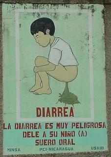
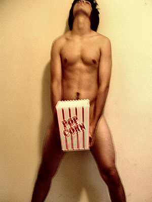

Canción pop
 De: La Frikipedia, la enciclopedia extremadamente seria.
De: La Frikipedia, la enciclopedia extremadamente seria.
 Cuando haces POP, ya no hay stop...
Una canción pop es una obra musical destinada a la recaudación de un máximo beneficio. Es decir, "Destruimos la música, solo nos importa el dinero". Sí, esta es la indiscutible consigna.
Tradicionalmente, es una canción creada en una casa discográfica cuando selecciona a un o más individuos “agradables a la vista” (en el fondo solo buscan eso) para que ponga voz a una canción.
Un equipo de personas se encargan de hacer una buena canción pop: un compositor, un arreglista, un o varios productores…
Pero, entonces, el compositor deja de ser compositor, asesorado por un grupo de analistas que saben las tendencias del mercado musical, acecha al compositor hasta el punto de ofuscarle toda creatividad. Luego, la canción es puro estiércol(musicalmente hablando), pero como ha sido creada por estos analistas gusta a la gente vulgar, ¡la mayoría vaya!.
Composición más habitual de la obra
Compás 4/4 ¡Sobretodo! (el bombo/caja de toda la vida).
Músicos mercenarios que crean la base instrumental para que el/la cantante ponga su voz.
Tipos de estructuras de la canción pop
- A: Verso
- B: Bridge(se lo inventaron los americanos…)
- C:De Chuck Norris no! de estribillo o Chorus
- ABABCBCC. Ejemplo: Alguna de Britney Spears
- ABCCBCCBC. Ejemplo: Alguna de Robbie Williams
- CCCCCCBCCC. Ejemplo: Opá yo viazé un corrá(no sabría decir si es pop pero es un buen ejemplo xD).
Claves para ser un buen compositor pop
- La repetición del estribillo hasta la saciedad es un punto a favor.
- Rondas de acordes que sean lo más amenas posibles.
- Batería simple y básica.
- Lo realmente importante es la voz!
- Déjate guiar por la escasa inteligencia musical de los analistas, ellos solo saben lo que gusta, en el fondo es lo esencial en la música pop.
Principales organizaciones que promueven la mierda del pop(en España)
 Artista haciendo pop + CENSURA
Principales organizaciones que promueven la mierda del pop(en Latinoamérica)
Ejemplos de canciones pop
- Baby One More Time-Britney Spears
- Rock Dj-Robbie Williams.
- […] (Prefiero no citar más.)
Ver también
Autor(es):
- Nexo
- Aque
- IncompetenciaAmbismal
- Move Zig
- Rogalmar
- Cibercrank
- CyberNinja007
- Dark temptation
- Lord Black wizard
- Kevrochi
Frikipedia 2005-2016, Licencia
GFDL 1.2 - Extraído por FrikiLeaks